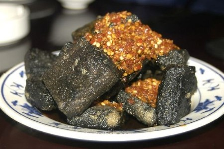

北京时间
臭豆腐
臭豆腐，顾名思义是“臭的豆腐”，但它吃起来却很香，有关臭豆腐的由来特别有趣。
相传康熙八年，安徽一位举子王致和进京赶考，却名落孙山，这时路费都花光，只好留京待下次再考。他小时曾做过豆腐，为维持生计，就在当时的“安徽会馆”内做豆腐卖。
有一次正在值盛夏，豆腐还剩了好多没卖出去，他一看，发愁了，如果倒掉就太可惜了。这时他突然想起家乡有用它们制成酱豆腐，但怎么作呢?只发试着把豆腐切成小块，加盐国和花椒封在坛子里。时间一长，王致和才想起来，赶忙打开坛子，臭气扑鼻而来，豆腐全变成绿色了!他好奇地尝了尝，味道却鲜美无比。由此，王致和的臭豆腐就这样扬名了。
